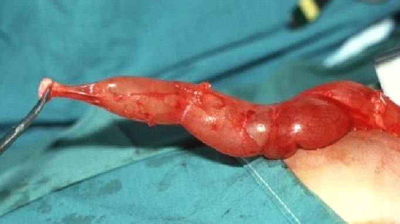
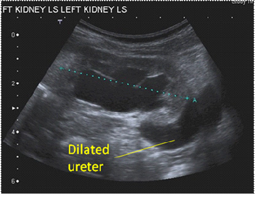
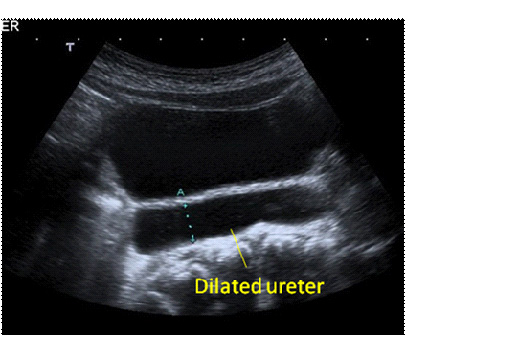
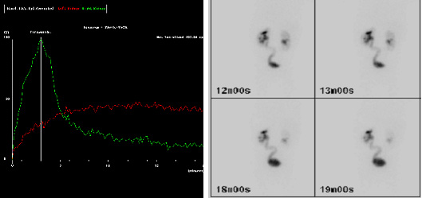

Introduction
Abnormalities of the ureterovesical junction (UVJ) were first classified into obstructed, refluxing, or unobstructed and not refluxing by Smith et al. 1, who also subdivided them into primary (congenital) or secondary (acquired). King 2 later published a more practical classification: obstructed, refluxing, non-obstructed and non-refluxing, or both obstructed and refluxing. Congenital UVJ anomalies often present due to the detection of an associated dilated or ‘mega’-ureter (Fig.1). Congenital megaureters are twice as common in males, and present with a left-to-right ratio of 1.8:1 3. As the refluxing UVJ anomaly is discussed in detail elsewhere, the focus of this chapter will be the obstructed, and non-obstructed non-refluxing, megaureters.
Embryology and genetics of the ureterovesical junction
UVJ anomalies form part of the congenital anomalies of the kidney and urinary tract (CAKUT) family. Briefly, CAKUT includes a spectrum of anomalies affecting the formation of the urinary tract, including renal agenesis, dysplasia or hypoplasia; proximal or distal ureteric obstruction (ureteropelvic junction (UPJ) or UVJ obstruction); dilatation of the ureter (megaureter); ureteric incompetence (vesicoureteric reflux) and urethral obstruction (e.g. due to posterior urethral valves or urethral atresia)4. Embryologically, the mammalian kidney derives from two components: the ureteric bud, an epithelium that branches recurrently to form the collecting ducts, and the metanephric mesenchyme. The ureteric bud also gives rise to the epithelium of the renal pelvis and ureter, which is known as the urothelium5.
To date, our knowledge of normal ureteral development is limited to what we have learnt from animal models such as transgenic mice with abnormal renal/ ureteral phenotypes. These studies suggest that several genes, transcription factors, as well as secreted proteins, contribute to normal ureteral development, that when deranged, manifest various forms of CAKUT. A key player in ureteric development is the glial cell line-derived neurotrophic factor and the transmembrane c-ret protein tyrosine kinase (GDNF/c-ret) axis4. Ureteric bud sprouting and branching is dependent on the interaction between GDNF and its co-receptor glycosyl-phosphaditylinositol-anchored co-receptor 1 (Gfrα1), which bind to and activate c-ret. GDNF is primarily expressed in the metanephric mesenchyme, the trigonal wedge of the distal ureter and the urogenital sinus. In c-ret -/-mutants, renal agenesis, severe hypodysplasia and blind-ending ureters were observed; GDNF -/- and Gfrα1 -/- mutants were also found to have similar phenotypes 6, suggesting that the GDNF-c-ret axis is required for ureteric bud initiation and early branching morphogenesis.
C-ret expression is retinoic acid (a metabolite of Vitamin A) dependent. Batourina et al. 7 showed that Vitamin A and the Ret proto-oncogene are required for formation of a proper connection between the bladder and ureter. Mouse mutants lacking Ret or Rara and Rarb, two retinoid receptor family members, had hydronephrosis and megaureter, both of which were linked to defects at early stages of ureter maturation, when “common nephritic duct” (CND - the name given by Batourina et al. to the part of the mesonephric duct proximal to the origin of the ureteric bud) remodeling induces ureteric orifices to separate from the mesonephric ducts. Their studies suggested that Vitamin A and Ret were required for the expansion of the CND into a structure called the wedge, which they proposed was the likely precursor of the trigone. However, their ensuing experiments challenged the traditional explanation for the mode of insertion of the ureter into the bladder 8. The traditional model of ureter maturation suggests that the ureteric orifice is transposed from its initial location at the end of the CND to the urogenital sinus, which differentiates into the bladder and urethra. The common nephritic duct integrates into the urogenital sinus, forming the trigone, and repositioning the ureters and the mesonephric duct in the process 9, 10. However, Batourina et al. showed that the CND does not differentiate into the trigone, but instead undergoes apoptosis. Rather than differentiating into the trigone, the wedge may be a transient structure that is formed as the CND undergoes remodeling and subsequently regresses. Vitamin A signaling is required for both urogenital sinus differentiation and for generating signals that control CND apoptosis 8. On the other hand, the trigone is formed mostly from bladder smooth muscle, with a more minor contribution from the ureter 11. Although an explanation for the abnormal development for the ureterovesical junction has not been put forward, it seems likely that an aberrant development of this pathway may be implicated.
The timing of smooth muscle differentiation in the distal ureter is unknown, but may be key to understanding why reflux or obstruction develop in-utero, persist in the newborn, and subside later in childhood. Pirker et al. 12 studied bladder specimens form porcine fetuses, newborn and 6-month old piglets. They found that at 60 days, bladder detrusor muscle was well-developed and innervated, whereas the intra- and extra-vesical ureter had only just started to differentiate. At day 90, the extravesical ureter was well-innervated, but the intra-vesical ureter did not mature until after birth. All smooth muscle components showed a striking increase in bulk between neonatal and later sections. The time-course of muscular development in this study correlates with findings in humans, in whom smooth muscle bundles of the extramural ureter first appear in weeks 17 to 22 of gestation, and ureteral muscle development proceeds in a craniocaudal direction 13. The authors also noticed that periureteral sheath development precedes ureteral smooth muscle development, which was also reported in humans. The periureteral sheath showed considerable postnatal neuromuscular development. Its muscle fibres grew significantly, and almost formed a continuous layer at 6 months 12. Tanagho 14 also observed that the distal ureter is the last portion to develop its muscular coat, and that early muscular differentiation is primarily of the circular muscles. The process whereby the circular muscle pattern, which is typical of the fetal ureter, changes progressively into the double muscle layers of the full-term infant, mOther studies have suggested possible explanations for the development of UVJ obstruction. These include a thick sleeve of muscle around the distal portion of the ureter 15, increased deposition of collagen fibres 16 and dysregulated neuromodulation in the juxtavesical segment of obstructed megaureters 17. Payabvash et al. 18 studied a series of obstructed ureters from patients between 6 months and 2 years of age, and showed the presence of increased myocyte apoptosis, reduced vascular and neural elements, associated with increased collagen fibres. Interestingly, Kang et al. 19 showed that there are significant differences in the number of smooth muscle cells, myocyte apoptosis indices, and number of C-kit positive Cajal-like cells, between the obstructive and refluxing subgroups. ay last up to two years, and may explain the transient functional disturbances of the UVJ during this period.
 |
 |
 |
 |
 |
 |
 |
 |
Prenatal diagnosis
In most U.K. centers, prenatal scans are performed routinely at 12 weeks (the “dating” scan) and 18 to 20 weeks (the “anomaly” scan) gestation. Further scans are performed later in pregnancy when indicated, such as in cases of upper tract dilatation, bilateral hydronephrosis, a thick-walled bladder, or the presence of oligohydramnios. Data form a large European database for surveillance of congenital malformations (EUROCAT) collected over a ten-year period gave an overall prevalence of congenital hydronephrosis of 11.5 per 10,000 births. 73% of cases were prenatally-diagonsed, and 72% were male 20. The proportion of these cases which also had a dilated ureter is not known. The detection of a dilated ureter in-utero by ultrasound is a difficult endeavor. The fetus may not be in the proper orientation, or the ureter may be obscured by overlying structures or maternal bowel gas. Furthermore, technicians may not be trained to specifically look for dilated ureters on routine screening. As a result, the prenatal detection of dilated ureters is likely to be unreliable 3. In a study of 101 patients with postnatally-identified hydroureteronephrosis referred to Great Ormond Street Hospital, only 20% had a dilated ureter documented prenatally 3. Forty-eight (47.5%) infants were found to have VUR or other pathology, and 53 (52.5%) were suspected of having a UVJ obstruction.
Postnatal investigation
Postnatally, babies with prenatally-diagnosed hydronephrosis are started on antibiotic prophylaxis, until a definitive diagnosis is made. Initial investigation involves a renal tract ultrasound scan, which is ideally carried out between days 3 and 7 of life. Boys with bilateral hydronephrosis should be catheterized and an urgent ultrasound and voiding cystourethrogram (VCUG) obtained, in order to exclude bladder outlet obstruction (BOO) such as posterior urethral valves, and/or identify bilateral VUR. In the absence of urethral obstruction, 99mTc-MAG-3 diuretic renography and a repeat ultrasound scan should be performed after 4 weeks of age. In the presence of unilateral dilatation (Fig.2a and b), an ultrasound scan, MAG-3 diuretic renography and a VCUG are performed between four weeks and three months of age.
Babies presenting postnatally (e.g. with a urinary tract infection) are also investigated in a similar fashion, although it is wise to wait for recovery from urosepsis before embarking on an MCUG or MAG-3.
According to the European Association of Nuclear Medicine (EANM) guidelines for standard and diuretic renography in children, renography allows estimation of two aspects of renal function 21. The first aspect is renal clearance, or differential renal function (DRF). DRF estimation is best undertaken between one and two minutes after tracer injection. The second aspect is the excretion, or disappearance, of the tracer from the kidney. Traditionally, an important delay in excretion is suggested by a continuously ascending curve and delayed transit, i.e. a Tmax (i.e. time to reach the maximum, or peak, of the curve) over 20 minutes (Fig.3a and b). However, delayed transit may be caused by the increased capacity afforded by a dilated pelvis and ureter per se. Hence, furosemide is administered in order to increase urine flow in an attempt to distinguish between good, intermediary and poor drainage 22. Poor drainage may also be apparent because the bladder is full, or because the effect of gravity on drainage is incomplete. For all these reasons, the interpretation of “impaired drainage” on diuretic renography is controversial. Long-term follow-up has shown that on sequential diuretic renograms, there may be both stable DRF and renal pelvis size, but the drainage is often impaired to varying degrees 22. This clinical observation suggests that only when there is a decrease in renal function and/or progressive dilatation of the renal pelvis can it be assumed that progressive renal deterioration has started 22. However, the pediatric urologist wishes to intervene before the onset of this deterioration, and there is on-going debate whether this impaired drainage is that indication.
Therefore, a combination of clinical and radiological findings must be taken into account when labeling a megaureter as “obstructed” or “non-obstructed”. The presence of symptoms, such as febrile urinary tract infection, or pain, are clinical indicators of a problem within the system. In the asymptomatic patient, the presence of a DRF below 40%, and/or increasing dilatation on serial ultrasound scans, are also suggestive of obstruction and indications for intervention. Delayed transit on MAG-3 in the presence of stable or improving dilatation, and a DRF above 40%, in an asymptomatic patient, is not a strong indicator of obstruction, although continued follow-up would be indicated. Liu et al. 3 and McLellan et al. 23 suggested that children with a retrovesical ureteral diameter greater than 10 mm were more likely to require surgical intervention.
It is important to be aware that ipsilateral UPJ and UVJ obstruction may co-exist. The pre-operative MAG-3 may suggest dual pathology when the obstructed ureter fills but fails to drain, as the obstructed pelvis slowly drains. Cay et al. 24 reported that a retrograde pyelogram was helpful in making a diagnosis in those cases which were suspected pre-operatively. Most of the patients in their case series, however, were only suspected of having both a UVJO and UPJO when a dilated ureter was discovered at pyeloplasty, and after difficulty inserting a stent past the UVJ. A post-operative nephrostogram confirmed the diagnosis.
Management
The trend in the management of primary megaureters has changed over the past twenty years. In 1989, Peters et al. reported that 89% of patients required surgery before 8 months of age 25. That same year, Keating et al. 26 reported that when the decision to intervene was based on absolute renal function, up to 87% of patients could be followed up conservatively. A further publication from the same unit confirmed stability or improvement at long-term follow-up of the same group of patients who managed conservatively 27. Liu et al. 3 also suggested that the majority of megaureters may be followed up conservatively, and showed that at a mean follow-up of 3.1 years, 34% of primary megaureters resolved spontaneously. Of the remaining cases, 17% were reimplanted due to break-through infection or deteriorating renal function, whereas 49% had persistent dilatation at follow-up, and were still being monitored conservatively.
Non-obstructed non-refluxing megaureters
Megaureters associated with a DRF >40% in an asymptomatic patient, may be managed conservatively. Close follow-up (every 3-4 months with ultrasound) and antibiotic prophylaxis are warranted for at least the first year of life, especially in cases with significant dilatation (>1cm ureteral diameter) 3, 23. Song et al. 28 showed that the risk of UTI is higher with UVJ than UPJ obstruction, and that UTI’s tend to occur within the first six months of life. Once the hydronephrosis is noted to be improving, follow-up appointments may be reduced to six-monthly and then annually, and antibiotic prophylaxis discontinued. At a median follow-up of 25.8 months, McLellan et al. showed that hydronephrosis had resolved completely in 72% of cases [27]. Children with persistent megaureter at the end of the study were noted to have a significant decrease in the degree of hydronephrosis, suggesting a dynamic process with a trend towards resolution. The authors also suggested that presenting Society of Fetal Urology (SFU) grade of hydronephrosis had a significant effect on median age of resolution (Table 1 summarizes SFU grades of hydronephrosis). Megaureters with grades 1 - 3 hydronephrosis at diagnosis were likely to resolve between 12 and 36 months of age. Grades 4 - 5 hydronephrosis took a longer period to resolve, up to 72 months 23.
There is no evidence, however, that resolution is permanent, and recent studies suggest that follow-up should continue into adult life. A long-term follow-up study by Shukla et al. 29 reported late deterioration in a 14-year old boy with bilateral primary megaureters, who presented with increased dilatation and functional deterioration six years after he was discharged from conservative follow-up. Even more alarming is the study by Hemal et al. 30, which reported the outcome of 55 patients with congenital megaureters presenting for the first time in the third decade of life, of whom 20 patients were found to have renal calculi. Five patients with bilateral megaureters were in chronic renal failure at diagnosis, of whom two eventually died of the disease. Hence early resolution following conservative management is not a life-long guarantee, and follow-up into adulthood is advisable.
Obstructed megaureters (UVJ obstruction)
The obstructed megaureter requires surgical intervention in order to preserve renal function. Although in most cases, the definitive intervention is ureteric reimplantation, other interventions have been proposed as temporizing measures. These include:
Ureteric Reimplantation
Peters et al.31 showed that repair of an obstructed megaureter in early infancy improves renal drainage as assessed by excretory urography, and therefore offers the potential for preventing renal damage before the development of symptoms or decline in function on the renogram. Ureteric reimplantation allows the aperistaltic, narrow segment to be excised, and the ureter to be tunneled into the bladder in an anti-reflux fashion. The tunnel should be at least five times the ureteral diameter to be effective, data based on a study by Paquin in 1959 32. In order to obtain this ratio when the ureteral diameter is above 10 mm, the distal 10 cm of the ureter may need to be tapered. A psoas hitch may also be required in order to ensure a straight entry of the ureter into the bladder. The two popular techniques used for tailoring megaureters are plication as reported by Starr33 and Kalicinski et al.34, and tapering as modified by Hendren35. Kalicinski et al. described a folding technique whereby the lateral, avascular part of the ureter was excluded from the lumen by a longitudinal running suture, and then folded posteriorly prior to re-implantation34. Starr modified this procedure, introducing many interrupted Lembert sutures that folded the ureteral wall inwards, thus preserving its blood supply, but making the subsequent re-implantation more cumbersome 33. Hendren advised excisional tapering, whereby a longitudinal strip of the redundant ureter is excised, and the ureter sutured in two layers 35. Ben-Meir et al. 36 compared the outcome of megaureter reimplantation with and without tailoring, and showed that there was no significant difference in outcome (94% success rate in the tailored group, and 96% in the non-tailored group). Intravesical reimplantation (Cohen and Leadbetter-Politano) techniques are preferable when the ureter has been tailored, especially in older children with a degree of bladder dysfunction 37. Laparoscopic and robotic ureteric tapering and implantation techniques have also been described 38, 39, although long-term results are awaited.
Ureteric reimplantation in infants below one year of age may be challenging due to the discrepancy between the grossly-dilated ureter and the small infantile bladder, and concern regarding possible iatrogenic bladder dysfunction. De Jong 40 investigated the bladder functional outcome of 49 neonates and infants with primary obstructive or refluxing megaureters, who underwent a Politano Leadbetter procedure, at a mean follow-up of 7.3 years. No onset of voiding dysfunction was noted at follow-up, and bladder capacity for age was significantly increased. No post-operative ureteral obstruction was observed. The author concluded that early major reconstructions of the lower urinary tract do not damage the urodynamic properties of the bladder and pelvic floor, provided that the surgery is performed by specialized pediatric urological surgeons. A further study from the same group 41 compared urodynamic outcome in patients who underwent ureteral reimplantation before, or after, one year of age. No significant difference in bladder capacity, compliance, or incidence of instability, was found.
Endoscopic procedures
In 1999, Shenoy and Rance reported of the use of JJ stents as a temporizing measure in infants with primary obstructive megaureters 42. The procedure involves the insertion of a 4.7 F or 5.2 F double pigtail stent, endoscopically where possible. A tight UVJ obstruction may preclude endoscopic insertion, in which case an open insertion via a cystostomy combined with dilatation of the ureteric orifice using a lachrymal probe may be performed. Stents are licensed to remain in-situ for six months, following which, they should be removed or replaced. The megaureter should be stented until the baby is over one year of age, by which time a ureteric reimplantation may be safely performed 43. The baby should remain on prophylactic antibiotics while the stent is in-situ, due to the risk of stent infection, and should be monitored by ultrasonography to ensure decompression of the system, and to check stent position. An ultrasound scan and MAG-3 renography performed three months after removal of stent will direct further management. In the presence of improved dilatation and drainage, and preserved function, no further intervention may be required 43. Persistent or worsening dilatation after a period of stenting, or further infection, is an indication for ureteric reimplantation. A long-term outcome study43 revealed that in 56% of cases, no further intervention was required after removal of the stent. However, two-thirds of patients required open stent insertion, and one-third suffered complications (migration, stone formation and infection).
Angerri et al. 44 published their experience with endoscopic balloon dilatation using a 4 F dilating balloon insufflated to 12-14 atm for 3-5 minutes. Disappearance of the narrowed ring was verified radiologically. A JJ-stent was left in-situ for two months. Of seven patients, post-operative drainage improved in five patients after one dilatation, and in a further patient after two dilatations. However, follow-up was short, and the long-term outcome not known.
Kajbafzadeh et al. 45 described an endoureterotomy procedure in patients with “intravesical ureteral obstruction” and a stricture length <1.5cm. Their case series of 47 patients includes infants as young as 1.5 months, although mean age at intervention was 3.7 years. The authors report an impressive success rate of 90% at a mean follow-up of 39 months, including 71% complete resolution of hydronephrosis, with self-limiting haematuria as the only complication.
Temporizing procedures
Temporizng measures include the refluxing ureteral reimplant, described by Lee et al.46, whereby the ureter proximal to the obstruction is anastomosed to the dome of the bladder in a freely refluxing fashion, thus converting “dangerous” obstruction to the lesser evil that is reflux. A temporary cutaneous ureterostomy is an alternative option, though not without its complications, which include stomal stenosis and pyelonephritis 47.
Conclusion
UVJ anomalies may be obstructive, refluxing, non-obstructed and non-refluxing, or both refluxing and obstructed. All types of congenital UVJ anomalies may be associated with a dilated or ‘mega’-ureter, therefore careful patient assessment, combined with radiological investigation, is required to identify “obstructed” megaureters which require surgical intervention. Only 10-20% of megaureters require intervention, whilst the remainder may be monitored conservatively. Surgical options include ureteric reimplantation, with or without ureteral tailoring, endoscopic procedures, or temporizing measures such as a cutaneous ureterostomy or refluxing ureterneocystostomy.
Reference List
1. Smith ED. Report of Working Party to establish the international nomenclature for the large ureter. In: Bergsma D, Duckett JW, editors. Birth Defects. Original articles series. 13 ed. 1977 p. 3-8.
2. King LR. Megaloureter: definition, diagnosis and management. J Urol 1980; 123(2):222-223.
3. Liu HY, Dhillon HK, Yeung CK, Diamond DA, Duffy PG, Ransley PG. Clinical outcome and management of prenatally diagnosed primary megaureters. J Urol 1994; 152(2 Pt 2):614-617.
4. Stahl DA, Koul HK, Chacko JK, Mingin GC. Congenital anomalies of the kidney and urinary tract (CAKUT): a current review of cell signaling processes in ureteral development. J Pediatr Urol 2006; 2(1):2-9.
5. Woolf AS. A molecular and genetic view of human renal and urinary tract malformations. Kidney Int 2000; 58(2):500-512.
6. Takahashi M. The GDNF/RET signaling pathway and human diseases. Cytokine Growth Factor Rev 2001; 12(4):361-373.
7. Batourina E, Choi C, Paragas N et al. Distal ureter morphogenesis depends on epithelial cell remodeling mediated by vitamin A and Ret. Nat Genet 2002; 32(1):109-115.
8. Batourina E, Tsai S, Lambert S et al. Apoptosis induced by vitamin A signaling is crucial for connecting the ureters to the bladder. Nat Genet 2005; 37(10):1082-1089.
9. Tanagho EA, Smith DR, Meyers FH. The trigone: anatomical and physiological considerations. 2. In relation to the bladder neck. J Urol 1968; 100(5):633-639.
10. Tanagho EA, Meyers FH, Smith DR. The trigone: anatomical and physiological considerations. I. In relation to the ureterovesical junction. J Urol 1968; 100(5):623-632.
11. Viana R, Batourina E, Huang H et al. The development of the bladder trigone, the center of the anti-reflux mechanism. Development 2007; 134(20):3763-3769.
12. Pirker ME, Rolle U, Shinkai T, Shinkai M, Puri P. Prenatal and postnatal neuromuscular development of the ureterovesical junction. J Urol 2007; 177(4):1546-1551.
13. Matsuno T, Tokunaka S, Koyanagi T. Muscular development in the urinary tract. J Urol 1984; 132(1):148-152.
14. Tanagho EA. Intrauterine fetal ureteral obstruction. J Urol 1973; 109(2):196-203.
15. Dixon JS, Jen PY, Yeung CK et al. The structure and autonomic innervation of the vesico-ureteric junction in cases of primary ureteric reflux. Br J Urol 1998; 81(1):146-151.
16. Lee BR, Silver RI, Partin AW, Epstein JI, Gearhart JP. A quantitative histologic analysis of collagen subtypes: the primary obstructed and refluxing megaureter of childhood. Urology 1998; 51(5):820-823.
17. Hertle L, Nawrath H. In vitro studies on human primary obstructed megaureters. J Urol 1985; 133(5):884-887.
18. Payabvash S, Kajbafzadeh AM, Tavangar SM, Monajemzadeh M, Sadeghi Z. Myocyte apoptosis in primary obstructive megaureters: the role of decreased vascular and neural supply. J Urol 2007; 178(1):259-264.
19. Kang HJ, Lee HY, Jin MH, Jeong HJ, Han SW. Decreased interstitial cells of Cajal-like cells, possible cause of congenital refluxing megaureters: Histopathologic differences in refluxing and obstructive megaureters. Urology 2009; 74(2):318-323.
20. Garne E, Loane M, Wellesley D, Barisic I. Congenital hydronephrosis: prenatal diagnosis and epidemiology in Europe. J Pediatr Urol 2009; 5(1):47-52.
21. Gordon I, Colarinha P, Fettich J, Fischer S, Frokier J. Guidelines for Standard and Diuretic Renogram in Children. 2000. European Association of Nuclear Medicine Guidelines.
Ref Type: Report
22. Gordon I. Diuretic renography in infants with prenatal unilateral hydronephrosis: an explanation for the controversy about poor drainage. BJU Int 2001; 87(6):551-555.
23. McLellan DL, Retik AB, Bauer SB et al. Rate and predictors of spontaneous resolution of prenatally diagnosed primary nonrefluxing megaureter. J Urol 2002; 168(5):2177-2180.
24. Cay A, Imamoglu M, Bahat E, Sarihan H. Diagnostic difficulties in children with coexisting pelvi-ureteric and vesico-ureteric junction obstruction. BJU Int 2006; 98(1):177-182.
25. Peters CA, Mandell J, Lebowitz RL et al. Congenital obstructed megaureters in early infancy: diagnosis and treatment. J Urol 1989; 142(2 Pt 2):641-645.
26. Keating MA, Escala J, Snyder HM, III, Heyman S, Duckett JW. Changing concepts in management of primary obstructive megaureter. J Urol 1989; 142(2 Pt 2):636-640.
27. Baskin LS, Zderic SA, Snyder HM, Duckett JW. Primary dilated megaureter: long-term followup. J Urol 1994; 152(2 Pt 2):618-621.
28. Song SH, Lee SB, Park YS, Kim KS. Is antibiotic prophylaxis necessary in infants with obstructive hydronephrosis? J Urol 2007; 177(3):1098-1101.
29. Shukla AR, Cooper J, Patel RP et al. Prenatally detected primary megaureter: a role for extended followup. J Urol 2005; 173(4):1353-1356.
30. Hemal AK, Ansari MS, Doddamani D, Gupta NP. Symptomatic and complicated adult and adolescent primary obstructive megaureter--indications for surgery: analysis, outcome, and follow-up. Urology 2003; 61(4):703-707.
31. Peters CA, Mandell J, Lebowitz RL et al. Congenital obstructed megaureters in early infancy: diagnosis and treatment. J Urol 1989; 142(2 Pt 2):641-645.
32. Paquin AJ, Jr. Ureterovesical anastomosis: the description and evaluation of a technique. J Urol 1959; 82:573-583.
33. Starr A. Ureteral plication. A new concept in ureteral tailoring for megaureter. Invest Urol 1979; 17(2):153-158.
34. Kalicinski ZH, Kansy J, Kotarbinska B, Joszt W. Surgery of megaureters--modification of Hendren's operation. J Pediatr Surg 1977; 12(2):183-188.
35. Hendren WH. Operative repair of megaureter in children. J Urol 1969; 101(4):491-507.
36. Ben-Meir D, McMullin N, Kimber C, Gibikote S, Kongola K, Hutson JM. Reimplantation of obstructive megaureters with and without tailoring. J Pediatr Urol 2006; 2(3):178-181.
37. DeFoor W, Minevich E, Reddy P et al. Results of tapered ureteral reimplantation for primary megaureter: extravesical versus intravesical approach. J Urol 2004; 172(4 Pt 2):1640-1643.
38. Ansari MS, Mandhani A, Khurana N, Kumar A. Laparoscopic ureteral reimplantation with extracorporeal tailoring for megaureter: a simple technical nuance. J Urol 2006; 176(6 Pt 1):2640-2642.
39. Hemal AK, Nayyar R, Rao R. Robotic repair of primary symptomatic obstructive megaureter with intracorporeal or extracorporeal ureteric tapering and ureteroneocystostomy. J Endourol 2009; 23(12):2041-2046.
40. de Jong TP. Treatment of the neonatal and infant megaureter in reflux, obstruction and complex congenital anomalies. Acta Urol Belg 1997; 65(2):45-47.
41. de Kort LM, Klijn AJ, Uiterwaal CS, De Jong TP. Ureteral reimplantation in infants and children: effect on bladder function. J Urol 2002; 167(1):285-287.
42. Shenoy MU, Rance CH. Is there a place for the insertion of a JJ stent as a temporizing procedure for symptomatic partial congenital vesico-ureteric junction obstruction in infancy? BJU Int 1999; 84(4):524-525.
43. Farrugia MK, Steinbrecher HA, Malone PS. The utilization of stents in the management of primary obstructive megaureters requiring intervention before 1 year of age. J Pediatr Urol 2010.
44. Angerri O, Caffaratti J, Garat JM, Villavicencio H. Primary obstructive megaureter: initial experience with endoscopic dilatation. J Endourol 2007; 21(9):999-1004.
45. Kajbafzadeh AM, Payabvash S, Salmasi AH et al. Endoureterotomy for treatment of primary obstructive megaureter in children. J Endourol 2007; 21(7):743-749.
46. Lee SD, Akbal C, Kaefer M. Refluxing ureteral reimplant as temporary treatment of obstructive megaureter in neonate and infant. J Urol 2005; 173(4):1357-1360.
47. Gearhart JP. Primary obstructive ureter in neonates. Treatment by temporary uretero-cutaneostomy. Br J Urol 1994; 74(1):133-134.

Figure 1. Intra-operative view of megaureter (MU) and narrowed, aperistaltic juxta-vesical segment (AS).

Figures 2a and b. Ultrasound appearance of a dilated ureter, seen exiting a dilated renal pelvis (a) and visible behind the bladder (b)

Figure 3a and b. MAG-3 images showing delayed drainage of tracer (red curve) at 20 minutes (a) and visible left (L) ureter on delayed imaging (b), suggesting a hold-up at the left UVJ.